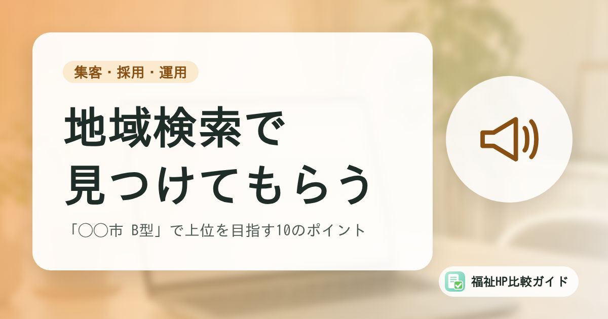

福祉事業所のホームページを地域検索で見つけてもらうSEOの基本｜「◯◯市 B型」で上位を目指す10のポイント

福祉事業所を探す人の多くは、「地域名＋サービス名」で検索します。全国から集客する必要はなく、通える範囲の人に見つけてもらえれば十分です。この記事では、地域での検索に強いホームページにするための基本を紹介します。
この記事でわかること
- 福祉事業所のSEOは「地域名＋サービス名」が基本
- タイトル・見出し・ページ構成で押さえる10のポイント
- Googleビジネスプロフィールとの連携
- やってはいけない手法と、効果の確認方法
福祉事業所のSEOは「地域」がカギ
SEO（検索エンジン最適化）とは、Googleなどの検索結果で自分たちのホームページを見つけてもらいやすくするための取り組みです。
福祉事業所を探す人は、次のように「地域名＋サービス名」で検索することがほとんどです。
- 「◯◯市 就労継続支援B型」
- 「◯◯区 放課後等デイサービス 空き」
- 「◯◯駅 グループホーム 精神」
- 「◯◯町 生活介護 送迎あり」
全国の事業所と競う必要はなく、通える範囲の地域で上位に表示されることが目標です。そのため、基本を押さえるだけでも効果が出やすい分野といえます。
地域検索に強くなる10のポイント
1. ページのタイトルに「地域名＋サービス名＋事業所名」を入れる
検索結果に表示されるタイトル（titleタグ）は、もっとも重要な要素のひとつです。
- よい例：「◯◯市の就労継続支援B型｜◯◯ワークス（◯◯駅徒歩5分）」
- 避けたい例：「ホーム」「◯◯ワークス公式サイト」だけ
2. 説明文（メタディスクリプション）で特色を伝える
検索結果のタイトルの下に表示される説明文には、サービスの特色、対象者、見学の案内などを簡潔に書きます。クリックされるかどうかを左右します。
3. 見出しと本文にも地域名・サービス名を自然に入れる
トップページの最初の見出しに「◯◯市の放課後等デイサービス」のように書き、本文でも所在地、対応エリア、最寄り駅などを自然に記載します。同じ言葉を不自然に繰り返す必要はありません。
4. 住所・電話番号・事業所名を正確に、統一して書く
ホームページ、Googleビジネスプロフィール、WAM NET、求人サイトなどで、事業所名・住所・電話番号の表記をそろえましょう。表記がばらばらだと、同じ事業所だと認識されにくくなります。
5. サービスごと・事業所ごとにページを分ける
複数のサービスや事業所がある場合は、それぞれに専用のページを作り、そのページだけで内容がわかるようにします。1ページにすべてを詰め込むより、検索した人の目的に合ったページが表示されやすくなります。
6. 「探している人の疑問」に答える内容を載せる
対象者、利用料、送迎範囲、1日の流れ、空き状況、見学の方法など、検索する人が知りたい情報を具体的に掲載します。Googleは「ユーザーにとって有用で信頼できるコンテンツ」を評価するとしています。載せるべき情報は「ホームページに載せるべき項目チェックリスト」を参考にしてください。
7. スマートフォンで見やすくする
福祉事業所を探す人の多くはスマートフォンを使っています。文字の大きさ、ボタンの押しやすさ、表示の速さを確認しましょう。電話番号はタップで発信できるようにしておきます。
8. 画像を軽くし、代替テキストをつける
大きすぎる画像はページの表示を遅くします。適切なサイズに縮小し、内容を説明する代替テキストをつけましょう。アクセシビリティの向上にもつながります。
9. Googleビジネスプロフィールと連携させる
地図の検索結果に表示されるGoogleビジネスプロフィールに、ホームページのアドレスを登録し、情報を一致させます。詳しくは「Googleビジネスプロフィールのガイドラインと注意点」で解説しています。
10. 定期的に更新する
お知らせ、行事の報告、空き状況などを定期的に更新すると、「活動している事業所」であることが伝わります。更新日を明記しておくと、閲覧者にも情報の新しさが伝わります。
やってはいけない手法
Googleは、検索順位を不正に操作しようとする行為を「スパム」として禁止しています。次のような手法は、かえって検索結果から除外される原因になります。
| 手法 | 問題点 |
|---|---|
| キーワードの詰め込み | 地域名やサービス名を不自然に何度も繰り返す |
| リンクの購入 | 順位を上げる目的で、お金を払って他のサイトからリンクを張ってもらう |
| 地域名だけを変えた大量のページ | 「◯◯市」「△△市」など地名だけを入れ替えた中身のないページを量産する |
| 他サイトの文章のコピー | 他の事業所や公的機関の文章をそのまま転載する |
| 内容の薄い記事の大量生成 | 利用者に役立たない記事を、検索順位のためだけに大量に作る |
対応エリアのページは「中身」が大切
送迎エリアごとのページを作ること自体は問題ありませんが、地名を入れ替えただけのページは評価されません。その地域からの送迎ルートや所要時間、近くの学校からの迎えの可否など、その地域の人に役立つ情報を載せましょう。
効果を確認する方法
SEOの効果は、無料のツールで確認できます。
- Google Search Console：どんな言葉で検索されて表示・クリックされたか、ページがGoogleに登録されているかを確認できる
- Googleアナリティクス：ホームページへの訪問者数、よく見られているページ、問い合わせページへの到達などを確認できる
- Googleビジネスプロフィールのパフォーマンス：地図での表示回数、電話やルート検索の回数を確認できる
月に1回程度、「どんな言葉で見つけられているか」「問い合わせにつながっているか」を確認し、ページの改善に活かしましょう。
まとめ
福祉事業所のSEOは、「地域名＋サービス名」で探している人に見つけてもらうことが基本です。タイトルや見出しに地域名とサービス名を入れ、探している人の疑問に答える内容を載せ、Googleビジネスプロフィールと情報をそろえることで、地域での検索に強いホームページになります。
順位を保証するような営業や、不自然な手法には頼らず、利用者や家族にとって役立つ情報を発信し続けることが、もっとも確実な方法です。
よくある質問
SEOの効果が出るまでどのくらいかかりますか？
ページの内容や競合の状況によって異なりますが、新しいページがGoogleに認識され、検索結果に安定して表示されるまでには数週間から数か月かかることが一般的です。地域のサービス名での検索は競合が比較的少ないため、基本を押さえれば成果が出やすい分野です。
「SEO対策で必ず1位にします」という営業を受けました。依頼してもよいですか？
Googleは、検索順位を保証できる人はいないと説明しています。順位の保証をうたう営業や、大量のリンクを購入するなどの手法は、かえってペナルティの原因になることがあります。依頼する場合は、具体的に何を行うのか、費用と期間、成果の測り方を確認しましょう。
ブログは書いたほうがよいですか？
日々の活動や行事、支援の工夫などを定期的に発信すると、事業所の雰囲気が伝わり、検索で見つけてもらう機会も増えます。ただし、更新が負担になって止まってしまうと逆効果になることもあります。月1〜2回など、続けられるペースで始めましょう。
参考資料・出典
- Google 検索セントラル「SEO スターター ガイド」
- Google 検索セントラル「有用で信頼性の高い、ユーザー第一のコンテンツの作成」
- Google 検索セントラル「Google ウェブ検索のスパムに関するポリシー」
- Google ビジネス プロフィール ヘルプ「Google でローカル検索結果のランキングを改善する方法」
制度・料金・統計は改定される場合があります。最新の内容は各出典の公式情報でご確認ください。